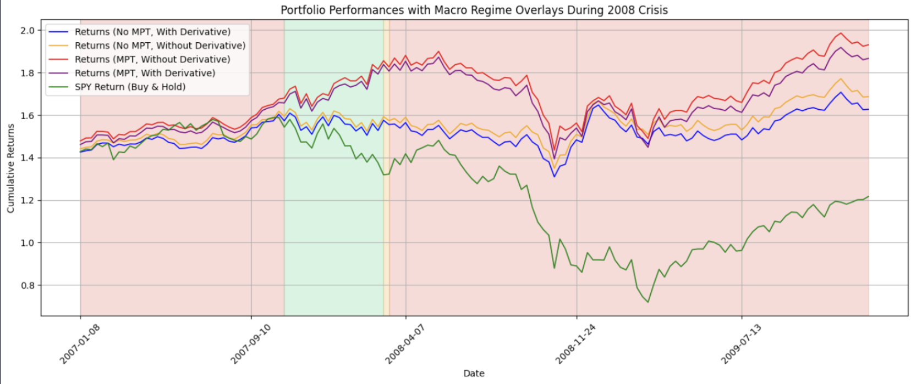

Projects

Dynamic Asset Allocation Strategy Using Machine Learning and Modern Portfolio Theory
Developed an asset allocation framework combining Hidden Markov Models to detect market regimes with Modern Portfolio Theory to adjust weights dynamically. Achieved superior cumulative returns and improved Sharpe ratios compared to static benchmark portfolios.
View Project.png)
Uncovering Earnings-Driven Patterns in Amazon’s Option Chain with Tableau
Built an interactive Tableau dashboard analyzing Amazon’s option chain data before and after earnings releases, highlighting implied volatility (IV) crushes, IV skews, and changes in pricing behavior.
View Project